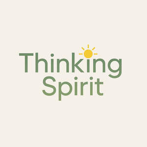

Trade Mark Journal No.2025/037 12 September 2025
UK00004258167 2 September 2025 (9,16,21,25,28,41)

- Class 9
- “Downloadable electronic publications; downloadable e-books; downloadable children’s books; downloadable novels; downloadable fiction books; downloadable non-fiction books; downloadable educational books; audiobooks; downloadable digital files containing artwork, illustrations, and text; downloadable activity books and colouring books in electronic form; downloadable educational materials; mobile applications featuring stories, books, games, and educational content; downloadable video content; downloadable music; downloadable podcasts.”.
- Class 16
- “Books; printed books; children’s books; picture books; storybooks; novels; fiction books; non-fiction books; poetry books; educational books; activity books; colouring books; workbooks; printed teaching materials; instructional and educational materials; printed manuals; pamphlets; magazines; newsletters; printed periodicals; posters; postcards; calendars; stationery; notebooks; diaries; stickers; printed art prints; photographs; greeting cards.; Books; Non-fiction books; Fiction books; Series of non-fiction books; Manuscript books; Books for children; Printed books; Series of fiction books; Educational books; Fantasy books; Story books; Baby books [storybooks]; Picture books; Commemorative books; Information books; Activity books; Children's books; Books featuring fictional stories; Religious books; Baby books; Books featuring fantasy stories; Novels; Graphic art books; Comic books; Writing books; Cookery books; Copy books; Covers for books; Music books; Coloring books; Colouring books; Wirebound books; Hymn books; Travel books; Painting books; Printed music books; Reference books; Drawing books; Poster books; Guide books; Gift books; Covers for cheque books; Prayer books; Check books; Hand books; Guest books; Memorandum books; Scrap books; Resource books; Jackets of paper for books; Data books; Flip books; Coupon books; Sticker books; Exercise books; School writing books; Dictation books; Manga comic books; Log books; Rule books; Visitors books; Covering materials for books; Pop-up books; Composition books; Signature books; Wedding books; Score books; Telephone books; Music note books; Writing or drawing books; Expense books; Pocket books [stationery]; Holders for cheque books; Ledgers [books]; Index books; Recipe books; Song books; Date books; Note books; Coloring books for adults.
- Class 21
- “Mugs; cups; drinking bottles; water bottles; flasks; lunch boxes; household and kitchen containers; plates; bowls.”.
- Class 25
- “Clothing; T-shirts; hoodies; sweatshirts; jumpers; trousers; shorts; dresses; skirts; jackets; coats; socks; footwear; headgear; hats; caps; children’s clothing; baby clothing; sleepwear; loungewear.”.
- Class 28
- “Toys; children’s toys; soft toys; plush toys; dolls; action figures; puzzles; board games; card games; educational games; role-play toys; building toys; craft kits for children; playsets.”.
- Class 41
- “Publishing of books and educational materials; online electronic publishing of books and journals; provision of non-downloadable electronic publications; educational services; teaching services; entertainment services in the nature of storytelling, live readings, and workshops for children; arranging and conducting educational events; providing online educational games and activities.”.
Thinking Spirit LTD